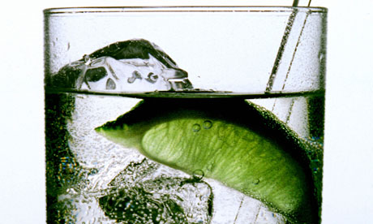

Diversions
Dinner and the evening activities will take place in the meeting rooms of the Strand Palace hotel, next door to the main conference venue. Details of the evening activities can be found below.
| Sunday 23rd June |
|
19:00
|
No formal diversions but there will be a "dining club" scheme for those who would like to form groups for dinner
|
| Monday 24th June |
|
18:30
|
Hot buffet dinner
|
|
19:15
- 21:00
|
Diversion
Probably musical in nature (TBC)
|
Rosencrantz and Guildenstern are ... dead similar to software folk everywhere
The 1966 Tom Stoppard play "Rosencrantz and Guildenstern are dead" concerns the fate of two minor characters from Shakespeare's Hamlet. It examines a number of themes and motifs, including: The Incomprehensibility of the World, The Difficulty of Making Meaningful Choices, The Relationship Between Life and the Stage, Sacred texts (Shakespeare’s Hamlet), Gambling.
The premise of this session is that these themes have direct analogs in the world of software development. We will discuss these themes and how they are portrayed in the play. We will then re-stage selected sections of the text in the context of software development. By doing this, we will gain insights into why some seemingly simple challenges in software development prove hard to overcome. The delegates can re-stage their selected scene however they see fit, so laptops/cameras/animation software may all be useful.
Audience need not know the play in detail, but it would be useful if they could have some idea what it is about. The play itself is less than 100 pages, and notes can be found online at http://www.sparknotes.com/lit/rosencrantz/
|
Games Lounge
This year we will have a games lounge alongside the evening diversions where people can talk, share a drink, generally socialise and, should the mood take them, play a board game...
...and to help with socialising there will be a subsidised bar courtesy of the sponsors.
|
| Tuesday 25th June |
|
18:30
|
Hot buffet dinner
|
| Members of the eXtreme Tuesday Club will be joining us for the evening activities. |
|
19:30
- 21:00
|
Agile Trivia Quiz
Agile approaches to software development are nothing new and this
diversion offers SPA participants the opportunity to have a bit of fun
demonstrating your wit and experience in this area.
In traditional pub-quiz style, we'll be forming teams with a variety of
experience to try their luck at different rounds of questions. There will
be a picture round where you'll be asked to determine what agile
techniques are being depicted, a History round where you can demonstrate
your knowledge of agile roots, plus a Tools round and of course a Trivia
round.
Don't worry if you don't have deep knowledge in some areas, marks may be
given for entertaining as well as correct answers. Come along to have a
bit of fun discussing Agile, you may improve your knowledge and even win a
prize!
|
Intro to Improvised theatre and comedy
A practical and playful introduction to spontaneity using the principles that underpin improvised theatre and comedy. You can use this participatory workshop to discover the keys to collaborative creativity or just give your mind a break and have some fun.
‘Creativity is not a talent. It is a way of operating.’ - John Cleese.
Clare Kerrison is an improviser and improv tutor from New Zealand, based in Cambridge, UK. She plays with the Cambridge Improv Factory (www.cambridgeimprov.com) and is a member of the Applied Improvisation Network.
‘Fun and liberating session with some practical takeaways.’ - UX Cambridge, 2012
|
Games Lounge
This year we will have a games lounge alongside the evening diversions where people can talk, share a drink, generally socialise and, should the mood take them, play a board game...
...oh, and the subsidised bar will still be there.
|
21:00
- 22:00
|
Gin tasting

|